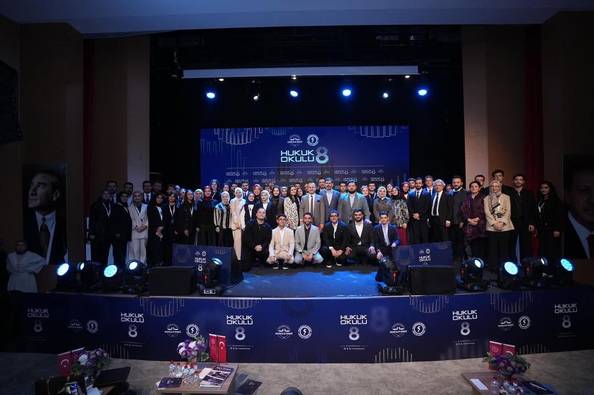
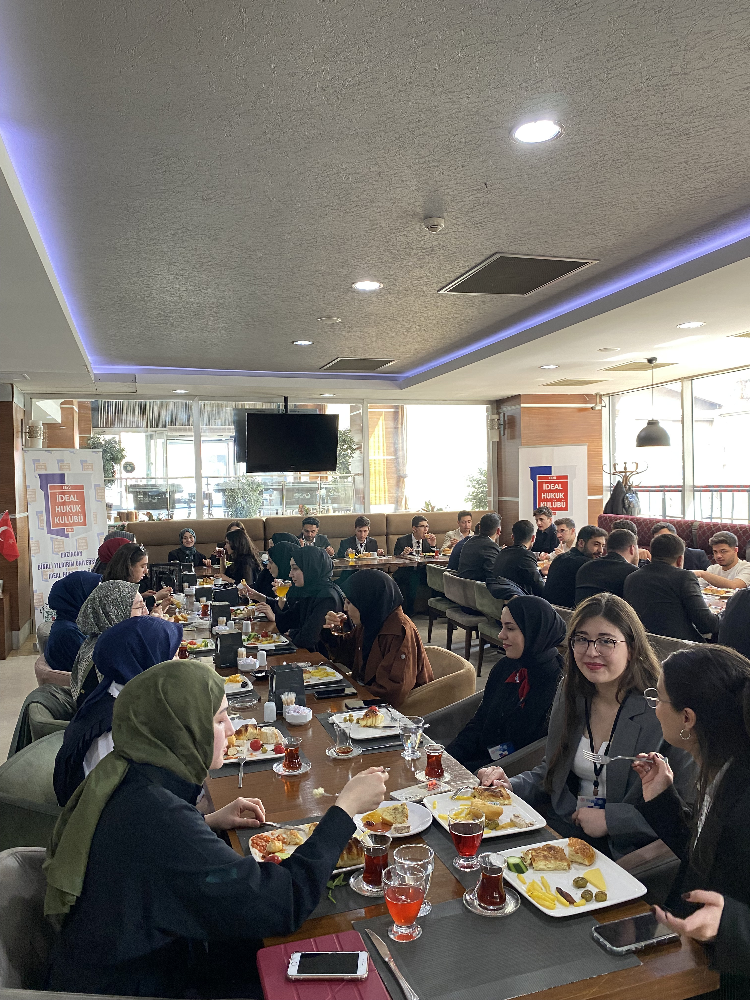
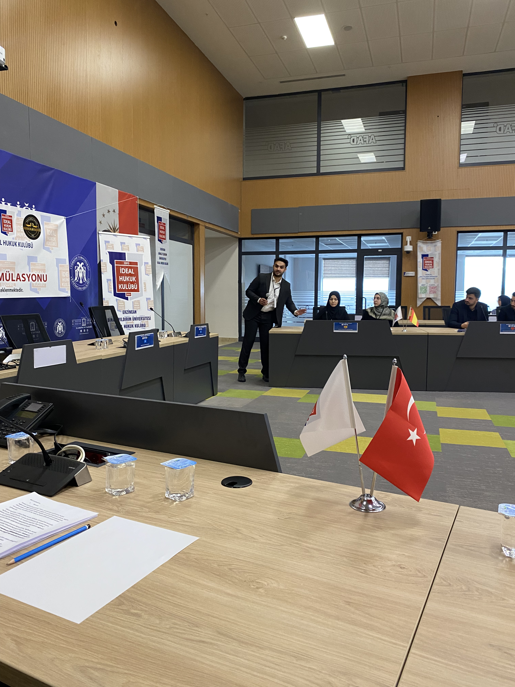
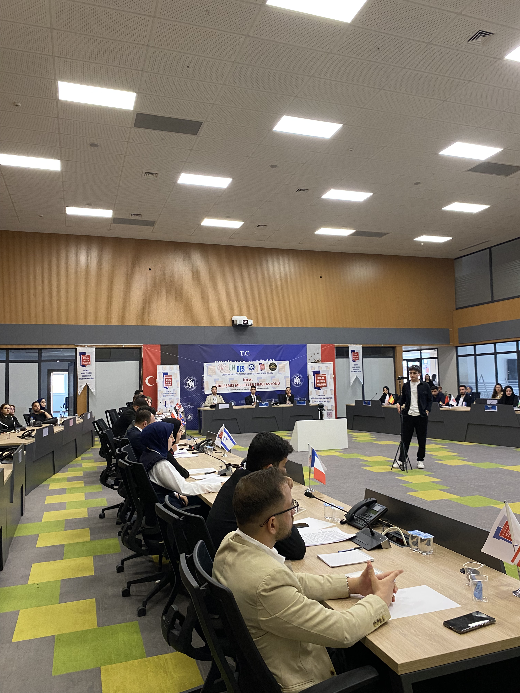
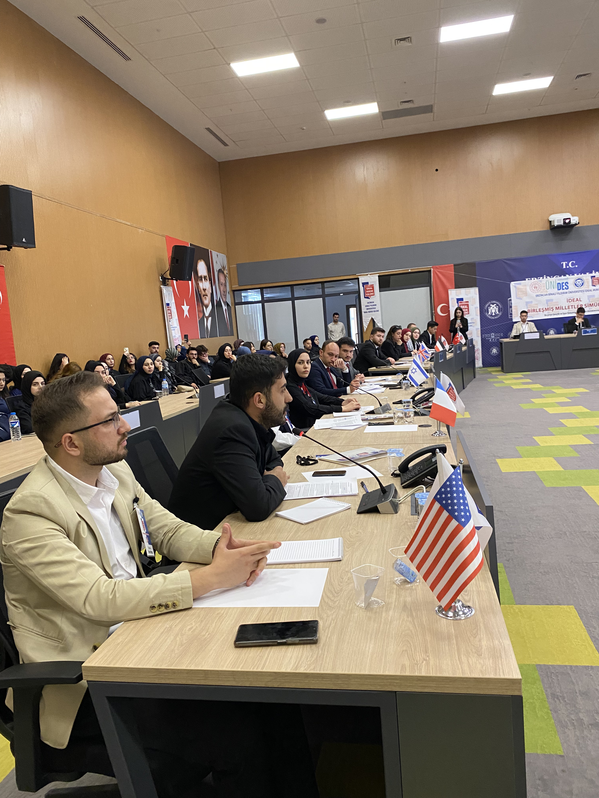
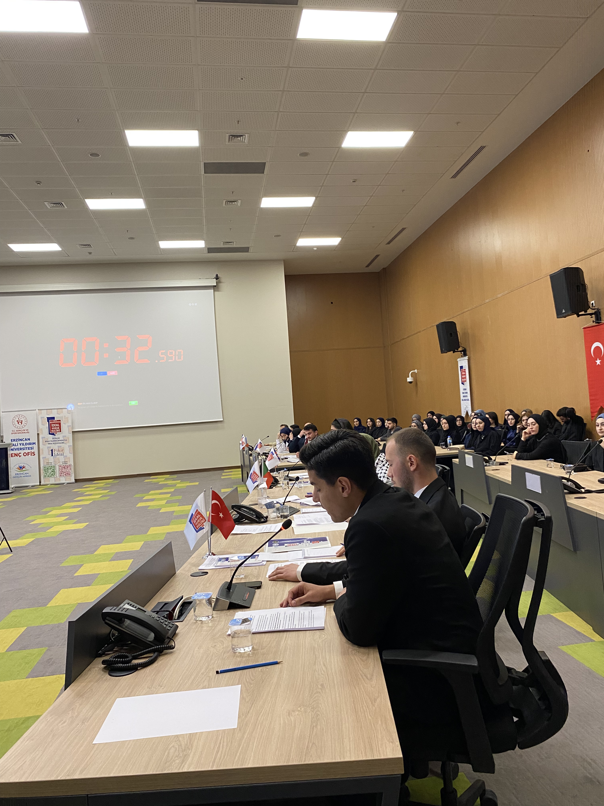
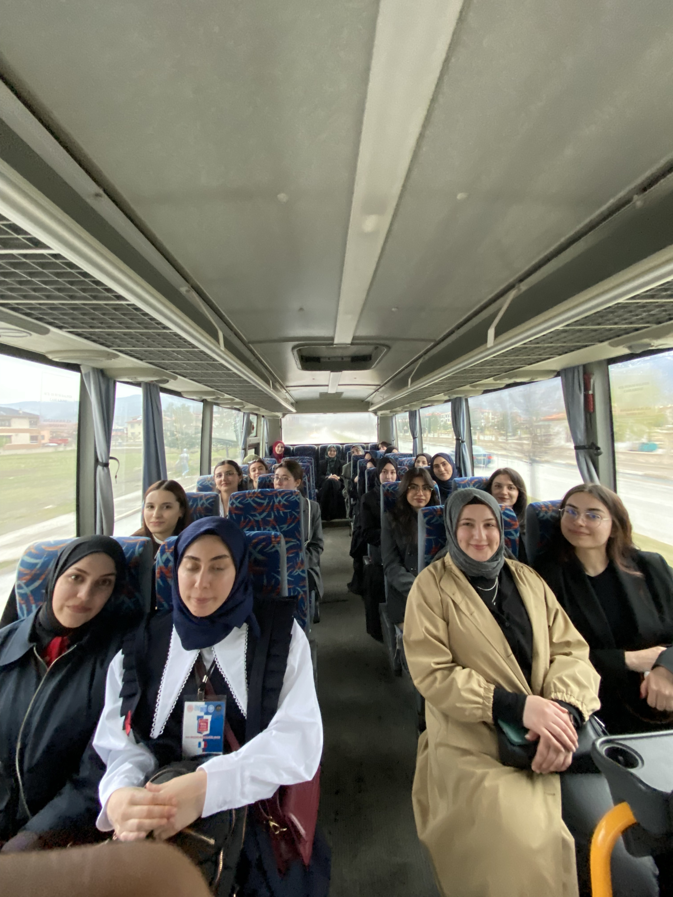

Hukukçular Derneği
Hukukçular Derneği, Türkiye’de hukukçular arasında mesleki dayanışmayı güçlendirmek ve hukuk devleti ilkelerini savunmak amacıyla kurulmuş bir sivil toplum kuruluşudur. Dernek, hukuk alanında farkındalık yaratmak, hukukun üstünlüğünü teşvik etmek ve kamuoyuna yönelik hukuki katkılar sunmakla tanınır.
Temel Bilgiler
• Kuruluş yılı: 1971
• Merkez: İstanbul, Türkiye
• Alan: Hukuk, insan hakları, adalet politikaları
• Üye profili: Avukatlar, akademisyenler, hukuk öğrencileri
• Web sitesi: hukukcular.org.tr
Tarihçe ve Amaç
Dernek, 1971 yılında Türkiye’deki hukukçuların mesleki birliği ve ortak değerler etrafında toplanmasını hedefleyerek kuruldu. Kuruluşundan itibaren, anayasal düzenin korunması, temel hak ve özgürlüklerin geliştirilmesi ve adalet sisteminin güçlendirilmesi için çalışmalar yürütmüştür.
Faaliyetler
Hukukçular Derneği; seminerler, konferanslar, eğitim programları ve yayınlar düzenleyerek hukuk bilincinin yaygınlaşmasına katkıda bulunur. Ayrıca yasa tasarılarına yönelik görüş bildirir ve insan hakları alanında raporlar hazırlar. Dernek, Türkiye genelinde hukuk fakülteleri ve barolarla işbirliği yapar.
Simülasyona Katılmak için Formu Doldurun
Etkinlikten Görseller





